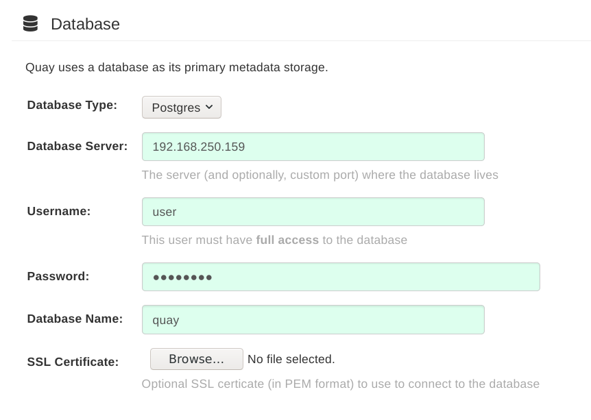
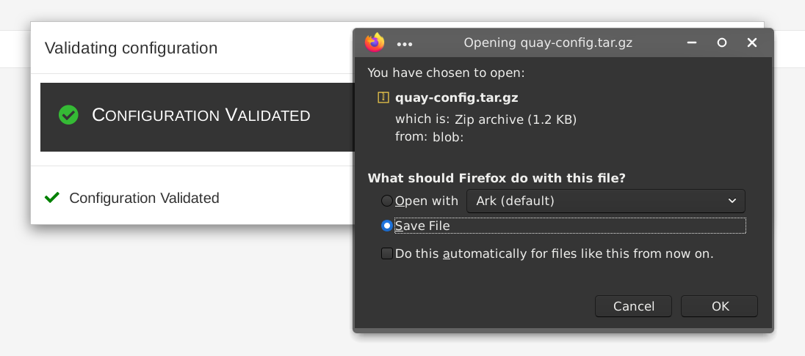
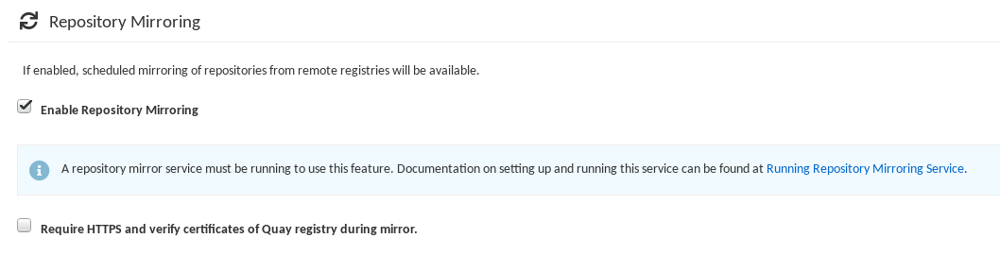

Deploy Red Hat Quay - High Availability
Deploy Red Hat Quay HA
Abstract
Preface
Red Hat Quay is an enterprise-quality container registry. Use Quay to build and store containers, then deploy them to the servers across your enterprise.
This procedure describes how to deploy a high availability, enterprise-quality Red Hat Quay setup.
Chapter 1. Overview
Features of Red Hat Quay include:
- High availability
- Geo-replication
- Repository mirroring
- Docker v2, schema 2 (multiarch) support
- Continuous integration
- Security scanning with Clair
- Custom log rotation
- Zero downtime garbage collection
- 24/7 support
Red Hat Quay provides support for:
- Multiple authentication and access methods
- Multiple storage backends
- Custom certificates for Quay, Clair, and storage backends
- Application registries
- Different container image types
1.1. Architecture
Red Hat Quay consists of a number of core components, both internal and external.
1.1.1. Internal components
-
Quay (container registry): Runs the
Quaycontainer as a service, consisting of several components in the pod. - Clair: Scans container images for vulnerabilities and suggests fixes.
1.1.2. External components
- Database: Used by Red Hat Quay as its primary metadata storage. Note that this is not for image storage.
- Redis (key-value store): Stores live builder logs and the Red Hat Quay tutorial.
Cloud storage:For supported deployments, you need to use one of the following types of storage:
- Public cloud storage: In public cloud environments, you should use the cloud provider’s object storage, such as Amazon Web Services’s Amazon S3 or Google Cloud’s Google Cloud Storage.
- Private cloud storage: In private clouds, an S3 or Swift compliant Object Store is needed, such as Ceph RADOS, or OpenStack Swift.
Do not use "Locally mounted directory" Storage Engine for any production configurations. Mounted NFS volumes are not supported. Local storage is meant for Red Hat Quay test-only installations.
Chapter 2. Preparing for Red Hat Quay (high availability)
This procedure presents guidance on how to set up a highly available, production-quality deployment of Red Hat Quay.
2.1. Prerequisites
Here are a few things you need to know before you begin the Red Hat Quay high availability deployment:
Either Postgres or MySQL can be used to provide the database service. Postgres was chosen here as the database because it includes the features needed to support Clair security scanning. Other options include:
- Crunchy Data PostgreSQL Operator: Although not supported directly by Red Hat, the CrunchDB Operator is available from Crunchy Data for use with Red Hat Quay. If you take this route, you should have a support contract with Crunchy Data and work directly with them for usage guidance or issues relating to the operator and their database.
- If your organization already has a high-availability (HA) database, you can use that database with Red Hat Quay. See the Red Hat Quay Support Policy for details on support for third-party databases and other components.
Ceph Object Gateway (also called RADOS Gateway) is one example of a product that can provide the object storage needed by Red Hat Quay. If you want your Red Hat Quay setup to do geo-replication, Ceph Object Gateway or other supported object storage is required. For cloud installations, you can use any of the following cloud object storage:
- Amazon S3 (see S3 IAM Bucket Policy for details on configuring an S3 bucket policy for Quay)
- Azure Blob Storage
- Google Cloud Storage
- Ceph Object Gateway
- OpenStack Swift
- CloudFront + S3
- NooBaa S3 Storage
- The haproxy server is used in this example, although you can use any proxy service that works for your environment.
Number of systems: This procedure uses seven systems (physical or virtual) that are assigned with the following tasks:
- A: db01: Load balancer and database: Runs the haproxy load balancer and a Postgres database. Note that these components are not themselves highly available, but are used to indicate how you might set up your own load balancer or production database.
- B: quay01, quay02, quay03: Quay and Redis: Three (or more) systems are assigned to run the Quay and Redis services.
- C: ceph01, ceph02, ceph03, ceph04, ceph05: Ceph: Three (or more) systems provide the Ceph service, for storage. If you are deploying to a cloud, you can use the cloud storage features described earlier. This procedure employs an additional system for Ansible (ceph05) and one for a Ceph Object Gateway (ceph04).
Each system should have the following attributes:
Red Hat Enterprise Linux (RHEL): Obtain the latest Red Hat Enterprise Linux 8 server media from the Downloads page and follow the installation instructions available in the Product Documentation for Red Hat Enterprise Linux 8.
- Valid Red Hat Subscription: Configure a valid Red Hat Enterprise Linux 8 server subscription.
- CPUs: Two or more virtual CPUs
- RAM: 4GB for each A and B system; 8GB for each C system
- Disk space: About 20GB of disk space for each A and B system (10GB for the operating system and 10GB for docker storage). At least 30GB of disk space for C systems (or more depending on required container storage).
Red Hat Enterprise Linux (RHEL) 8 is strongly recommended for highly available, production quality deployments of Red Hat Quay 3.6. RHEL 7 has not been tested with Red Hat Quay 3.6, and will be deprecated in a future release.
2.2. Using podman
This document uses podman for creating and deploying containers. If you do not have podman available on your system, you should be able to use the equivalent docker commands. For more information on podman and related technologies, see Building, running, and managing Linux containers on Red Hat Enterprise Linux 8.
Podman is strongly recommended for highly available, production quality deployments of Red Hat Quay 3.6. Docker has not been tested with Red Hat Quay 3.6, and will be deprecated in a future release.
2.3. Set up Load Balancer and Database
On the first two systems (q01 and q02), install the haproxy load balancer and postgresql database. Haproxy will be configured as the access point and load balancer for the following services running on other systems:
- Red Hat Quay (ports 80 and 443 on B systems)
- Redis (port 6379 on B systems)
- RADOS (port 7480 on C systems)
Because the services on the two systems run as containers, you will use podman, if it is installed. Alternatively, you could use the equivalent docker commands.
For more information on using podman and restarting containers, see the section "Using podman" earlier in this document.
Here is how to set up the A systems:
Open ports for haproxy service: Open all haproxy ports in SELinux and selected haproxy ports in the firewall:
# setsebool -P haproxy_connect_any=on # firewall-cmd --permanent --zone=public --add-port=6379/tcp --add-port=7480/tcp success # firewall-cmd --reload success
Set up haproxy service: Configure the
/etc/haproxy/haproxy.cfgto point to the systems and ports providing the Red Hat Quay, Redis, and Ceph RADOS services. Here are examples of defaults and added frontend and backend settings:#--------------------------------------------------------------------- # common defaults that all the 'listen' and 'backend' sections will # use if not designated in their block #--------------------------------------------------------------------- defaults mode tcp log global option httplog option dontlognull option http-server-close option forwardfor except 127.0.0.0/8 option redispatch retries 3 timeout http-request 10s timeout queue 1m timeout connect 10s timeout client 1m timeout server 1m timeout http-keep-alive 10s timeout check 10s maxconn 3000 #--------------------------------------------------------------------- # main frontend which proxys to the backends #--------------------------------------------------------------------- frontend fe_http *:80 default_backend be_http frontend fe_https *:443 default_backend be_https frontend fe_redis *:6379 default_backend be_redis frontend fe_rdgw *:7480 default_backend be_rdgw backend be_http balance roundrobin server quay01 quay01:80 check server quay02 quay02:80 check server quay03 quay03:80 check backend be_https balance roundrobin server quay01 quay01:443 check server quay02 quay02:443 check server quay03 quay03:443 check backend be_rdgw balance roundrobin server ceph01 ceph01:7480 check server ceph02 ceph02:7480 check server ceph03 ceph03:7480 check backend be_redis server quay01 quay01:6380 check inter 1s server quay02 quay02:6380 check inter 1s server quay03 quay03:6380 check inter 1sOnce the new haproxy.cfg file is in place, restart the haproxy service.
# systemctl restart haproxy
Install / Deploy a Database: Install, enable and start the PostgreSQL database container. The following commands will:
-
Start the PostgreSQL database with the user, password and database all set. Data from the container will be stored on the host system in the
/var/lib/pgsql/datadirectory. - List available extensions.
- Create the pg_trgm extension.
Confirm the extension is installed
$ mkdir -p /var/lib/pgsql/data $ chmod 777 /var/lib/pgsql/data $ sudo podman run -d --name postgresql_database \ -v /var/lib/pgsql/data:/var/lib/pgsql/data:Z \ -e POSTGRESQL_USER=quayuser -e POSTGRESQL_PASSWORD=quaypass \ -e POSTGRESQL_DATABASE=quaydb -p 5432:5432 \ registry.redhat.io/rhel8/postgresql-10:1 $ sudo podman exec -it postgresql_database /bin/bash -c 'echo "SELECT * FROM pg_available_extensions" | /opt/rh/rh-postgresql96/root/usr/bin/psql' name | default_version | installed_version | comment -----------+-----------------+-------------------+---------------------------------------- adminpack | 1.0 | | administrative functions for PostgreSQL ... $ sudo podman exec -it postgresql_database /bin/bash -c 'echo "CREATE EXTENSION IF NOT EXISTS pg_trgm;" | /opt/rh/rh-postgresql96/root/usr/bin/psql -d quaydb' $ sudo podman exec -it postgresql_database /bin/bash -c 'echo "SELECT * FROM pg_extension" | /opt/rh/rh-postgresql96/root/usr/bin/psql' extname | extowner | extnamespace | extrelocatable | extversion | extconfig | extcondition ---------+----------+--------------+----------------+------------+-----------+-------------- plpgsql | 10 | 11 | f | 1.0 | | pg_trgm | 10 | 2200 | t | 1.3 | | (2 rows) $ sudo podman exec -it postgresql_database /bin/bash -c 'echo "ALTER USER quayuser WITH SUPERUSER;" | /opt/rh/rh-postgresql96/root/usr/bin/psql' ALTER ROLE
-
Start the PostgreSQL database with the user, password and database all set. Data from the container will be stored on the host system in the
Open the firewall: If you have a firewalld service active on your system, run the following commands to make the PostgreSQL port available through the firewall:
# firewall-cmd --permanent --zone=trusted --add-port=5432/tcp success # firewall-cmd --reload success
Test PostgreSQL Connectivity: Use the
psqlcommand to test connectivity to the PostgreSQL database. Try this on a remote system as well, to make sure you can access the service remotely:# yum install postgresql -y # psql -h localhost quaydb quayuser Password for user test: psql (9.2.23, server 9.6.5) WARNING: psql version 9.2, server version 9.6. Some psql features might not work. Type "help" for help. test=> \q
2.4. Set Up Ceph
For this Red Hat Quay configuration, we create a three-node Ceph cluster, with several other supporting nodes, as follows:
- ceph01, ceph02, and ceph03 - Ceph Monitor, Ceph Manager and Ceph OSD nodes
- ceph04 - Ceph RGW node
- ceph05 - Ceph Ansible administration node
For details on installing Ceph nodes, see Installing Red Hat Ceph Storage on Red Hat Enterprise Linux.
Once you have set up the Ceph storage cluster, create a Ceph Object Gateway (also referred to as a RADOS gateway). See Installing the Ceph Object Gateway for details.
2.4.1. Install each Ceph node
On ceph01, ceph02, ceph03, ceph04, and ceph05, do the following:
Review prerequisites for setting up Ceph nodes in Requirements for Installing Red Hat Ceph Storage. In particular:
- Decide if you want to use RAID controllers on OSD nodes.
- Decide if you want a separate cluster network for your Ceph Network Configuration.
-
Prepare OSD storage (ceph01, ceph02, and ceph03 only). Set up the OSD storage on the three OSD nodes (ceph01, ceph02, and ceph03). See OSD Ansible Settings in Table 3.2 for details on supported storage types that you will enter into your Ansible configuration later. For this example, a single, unformatted block device (
/dev/sdb), that is separate from the operating system, is configured on each of the OSD nodes. If you are installing on metal, you might want to add an extra hard drive to the machine for this purpose. - Install Red Hat Enterprise Linux Server edition, as described in the RHEL 7 Installation Guide.
Register and subscribe each Ceph node as described in the Registering Red Hat Ceph Storage Nodes. Here is how to subscribe to the necessary repos:
# subscription-manager repos --disable=* # subscription-manager repos --enable=rhel-7-server-rpms # subscription-manager repos --enable=rhel-7-server-extras-rpms # subscription-manager repos --enable=rhel-7-server-rhceph-3-mon-rpms # subscription-manager repos --enable=rhel-7-server-rhceph-3-osd-rpms # subscription-manager repos --enable=rhel-7-server-rhceph-3-tools-rpms
Create an ansible user with root privilege on each node. Choose any name you like. For example:
# USER_NAME=ansibleadmin # useradd $USER_NAME -c "Ansible administrator" # passwd $USER_NAME New password: ********* Retype new password: ********* # cat << EOF >/etc/sudoers.d/admin admin ALL = (root) NOPASSWD:ALL EOF # chmod 0440 /etc/sudoers.d/$USER_NAME
2.4.2. Configure the Ceph Ansible node (ceph05)
Log into the Ceph Ansible node (ceph05) and configure it as follows. You will need the ceph01, ceph02, and ceph03 nodes to be running to complete these steps.
In the Ansible user’s home directory create a directory to store temporary values created from the ceph-ansible playbook
# USER_NAME=ansibleadmin # sudo su - $USER_NAME [ansibleadmin@ceph05 ~]$ mkdir ~/ceph-ansible-keys
Enable password-less ssh for the ansible user. Run ssh-keygen on ceph05 (leave passphrase empty), then run and repeat ssh-copy-id to copy the public key to the Ansible user on ceph01, ceph02, and ceph03 systems:
# USER_NAME=ansibleadmin # sudo su - $USER_NAME [ansibleadmin@ceph05 ~]$ ssh-keygen [ansibleadmin@ceph05 ~]$ ssh-copy-id $USER_NAME@ceph01 [ansibleadmin@ceph05 ~]$ ssh-copy-id $USER_NAME@ceph02 [ansibleadmin@ceph05 ~]$ ssh-copy-id $USER_NAME@ceph03 [ansibleadmin@ceph05 ~]$ exit #
Install the ceph-ansible package:
# yum install ceph-ansible
Create a symbolic between these two directories:
# ln -s /usr/share/ceph-ansible/group_vars \ /etc/ansible/group_varsCreate copies of Ceph sample yml files to modify:
# cd /usr/share/ceph-ansible # cp group_vars/all.yml.sample group_vars/all.yml # cp group_vars/osds.yml.sample group_vars/osds.yml # cp site.yml.sample site.yml
Edit the copied group_vars/all.yml file. See General Ansible Settings in Table 3.1 for details. For example:
ceph_origin: repository ceph_repository: rhcs ceph_repository_type: cdn ceph_rhcs_version: 3 monitor_interface: eth0 public_network: 192.168.122.0/24
Note that your network device and address range may differ.
Edit the copied
group_vars/osds.ymlfile. See the OSD Ansible Settings in Table 3.2 for details. In this example, the second disk device (/dev/sdb) on each OSD node is used for both data and journal storage:osd_scenario: collocated devices: - /dev/sdb dmcrypt: true osd_auto_discovery: false
Edit the
/etc/ansible/hostsinventory file to identify the Ceph nodes as Ceph monitor, OSD and manager nodes. In this example, the storage devices are identified on each node as well:[mons] ceph01 ceph02 ceph03 [osds] ceph01 devices="[ '/dev/sdb' ]" ceph02 devices="[ '/dev/sdb' ]" ceph03 devices="[ '/dev/sdb' ]" [mgrs] ceph01 devices="[ '/dev/sdb' ]" ceph02 devices="[ '/dev/sdb' ]" ceph03 devices="[ '/dev/sdb' ]"
Add this line to the
/etc/ansible/ansible.cfgfile, to save the output from each Ansible playbook run into your Ansible user’s home directory:retry_files_save_path = ~/
Check that Ansible can reach all the Ceph nodes you configured as your Ansible user:
# USER_NAME=ansibleadmin # sudo su - $USER_NAME [ansibleadmin@ceph05 ~]$ ansible all -m ping ceph01 | SUCCESS => { "changed": false, "ping": "pong" } ceph02 | SUCCESS => { "changed": false, "ping": "pong" } ceph03 | SUCCESS => { "changed": false, "ping": "pong" } [ansibleadmin@ceph05 ~]$Run the ceph-ansible playbook (as your Ansible user):
[ansibleadmin@ceph05 ~]$ cd /usr/share/ceph-ansible/ [ansibleadmin@ceph05 ~]$ ansible-playbook site.yml
At this point, the Ansible playbook will check your Ceph nodes and configure them for the services you requested. If anything fails, make needed corrections and rerun the command.
Log into one of the three Ceph nodes (ceph01, ceph02, or ceph03) and check the health of the Ceph cluster:
# ceph health HEALTH_OK
On the same node, verify that monitoring is working using rados:
# ceph osd pool create test 8 # echo 'Hello World!' > hello-world.txt # rados --pool test put hello-world hello-world.txt # rados --pool test get hello-world fetch.txt # cat fetch.txt Hello World!
2.4.3. Install the Ceph Object Gateway
On the Ansible system (ceph05), configure a Ceph Object Gateway to your Ceph Storage cluster (which will ultimately run on ceph04). See Installing the Ceph Object Gateway for details.
2.5. Set up Redis
With Red Hat Enterprise Linux 8 server installed on each of the three Red Hat Quay systems (quay01, quay02, and quay03), install and start the Redis service as follows:
Install / Deploy Redis: Run Redis as a container on each of the three quay0* systems:
# mkdir -p /var/lib/redis # chmod 777 /var/lib/redis # sudo podman run -d -p 6379:6379 \ -v /var/lib/redis:/var/lib/redis/data:Z \ registry.redhat.io/rhel8/redis-5Check redis connectivity: You can use the
telnetcommand to test connectivity to the redis service. Type MONITOR (to begin monitoring the service) and QUIT to exit:# yum install telnet -y # telnet 192.168.122.99 6379 Trying 192.168.122.99... Connected to 192.168.122.99. Escape character is '^]'. MONITOR +OK +1525703165.754099 [0 172.17.0.1:43848] "PING" QUIT +OK Connection closed by foreign host.
For more information on using podman and restarting containers, see the section "Using podman" earlier in this document.
Chapter 3. Configuring Red Hat Quay
Before running the Red Hat Quay service as a container, you need to use that same Quay container to create the configuration file (config.yaml) needed to deploy Red Hat Quay. To do that, you pass a config argument and a password (replace my-secret-password here) to the Quay container. Later, you use that password to log into the configuration tool as the user quayconfig.
Here’s an example of how to do that:
Start quay in setup mode: On the first quay node, run the following:
# sudo podman run --rm -it --name quay_config -p 8080:8080 registry.redhat.io/quay/quay-rhel8:v3.7.0 config my-secret-password
- Open browser: When the quay configuration tool starts up, open a browser to the URL and port 8080 of the system you are running the configuration tool on (for example http://myquay.example.com:8080). You are prompted for a username and password.
-
Log in as quayconfig: When prompted, enter the
quayconfigusername and password (the one from thepodman runcommand line). - Fill in the required fields: When you start the config tool without mounting an existing configuration bundle, you will be booted into an initial setup session. In a setup session, default values will be filled automatically. The following steps will walk through how to fill out the remaining required fields.
Identify the database: For the initial setup, you must include the following information about the type and location of the database to be used by Red Hat Quay:
- Database Type: Choose MySQL or PostgreSQL. MySQL will be used in the basic example; PostgreSQL is used with the high availability Red Hat Quay on OpenShift examples.
- Database Server: Identify the IP address or hostname of the database, along with the port number if it is different from 3306.
- Username: Identify a user with full access to the database.
- Password: Enter the password you assigned to the selected user.
- Database Name: Enter the database name you assigned when you started the database server.
SSL Certificate: For production environments, you should provide an SSL certificate to connect to the database.
The following figure shows an example of the screen for identifying the database used by Red Hat Quay:

Identify the Redis hostname, Server Configuration and add other desired settings: Other setting you can add to complete the setup are as follows. More settings for high availability Red Hat Quay deployment that for the basic deployment:
- For the basic, test configuration, identifying the Redis Hostname should be all you need to do. However, you can add other features, such as Clair Scanning and Repository Mirroring, as described at the end of this procedure.
For the high availability and OpenShift configurations, more settings are needed (as noted below) to allow for shared storage, secure communications between systems, and other features.
Here are the settings you need to consider:
Custom SSL Certificates: Upload custom or self-signed SSL certificates for use by Red Hat Quay. See Using SSL to protect connections to Red Hat Quay for details. Recommended for high availability.
ImportantUsing SSL certificates is recommended for both basic and high availability deployments. If you decide to not use SSL, you must configure your container clients to use your new Red Hat Quay setup as an insecure registry as described in Test an Insecure Registry.
- Basic Configuration: Upload a company logo to rebrand your Red Hat Quay registry.
Server Configuration: Hostname or IP address to reach the Red Hat Quay service, along with TLS indication (recommended for production installations). The Server Hostname is required for all Red Hat Quay deployments. TLS termination can be done in two different ways:
-
On the instance itself, with all TLS traffic governed by the nginx server in the
Quaycontainer (recommended). - On the load balancer. This is not recommended. Access to Red Hat Quay could be lost if the TLS setup is not done correctly on the load balancer.
-
On the instance itself, with all TLS traffic governed by the nginx server in the
- Data Consistency Settings: Select to relax logging consistency guarantees to improve performance and availability.
- Time Machine: Allow older image tags to remain in the repository for set periods of time and allow users to select their own tag expiration times.
- redis: Identify the hostname or IP address (and optional password) to connect to the redis service used by Red Hat Quay.
- Repository Mirroring: Choose the checkbox to Enable Repository Mirroring. With this enabled, you can create repositories in your Red Hat Quay cluster that mirror selected repositories from remote registries. Before you can enable repository mirroring, start the repository mirroring worker as described later in this procedure.
- Registry Storage: Identify the location of storage. A variety of cloud and local storage options are available. Remote storage is required for high availability. Identify the Ceph storage location if you are following the example for Red Hat Quay high availability storage. On OpenShift, the example uses Amazon S3 storage.
- Action Log Storage Configuration: Action logs are stored in the Red Hat Quay database by default. If you have a large amount of action logs, you can have those logs directed to Elasticsearch for later search and analysis. To do this, change the value of Action Logs Storage to Elasticsearch and configure related settings as described in Configure action log storage.
- Action Log Rotation and Archiving: Select to enable log rotation, which moves logs older than 30 days into storage, then indicate storage area.
- Security Scanner: Enable security scanning by selecting a security scanner endpoint and authentication key. To setup Clair to do image scanning, refer to Clair Setup and Configuring Clair. Recommended for high availability.
- Application Registry: Enable an additional application registry that includes things like Kubernetes manifests or Helm charts (see the App Registry specification).
-
rkt Conversion: Allow
rkt fetchto be used to fetch images from Red Hat Quay registry. Public and private GPG2 keys are needed. This field is deprecated. - E-mail: Enable e-mail to use for notifications and user password resets.
- Internal Authentication: Change default authentication for the registry from Local Database to LDAP, Keystone (OpenStack), JWT Custom Authentication, or External Application Token.
- External Authorization (OAuth): Enable to allow GitHub or GitHub Enterprise to authenticate to the registry.
- Google Authentication: Enable to allow Google to authenticate to the registry.
- Access Settings: Basic username/password authentication is enabled by default. Other authentication types that can be enabled include: external application tokens (user-generated tokens used with docker or rkt commands), anonymous access (enable for public access to anyone who can get to the registry), user creation (let users create their own accounts), encrypted client password (require command-line user access to include encrypted passwords), and prefix username autocompletion (disable to require exact username matches on autocompletion).
-
Registry Protocol Settings: Leave the
Restrict V1 Push Supportcheckbox enabled to restrict access to Docker V1 protocol pushes. Although Red Hat recommends against enabling Docker V1 push protocol, if you do allow it, you must explicitly whitelist the namespaces for which it is enabled. - Dockerfile Build Support: Enable to allow users to submit Dockerfiles to be built and pushed to Red Hat Quay. This is not recommended for multitenant environments.
Validate the changes: Select
Validate Configuration Changes. If validation is successful, you will be presented with the following Download Configuration modal:
-
Download configuration: Select the
Download Configurationbutton and save the tarball (quay-config.tar.gz) to a local directory to use later to start Red Hat Quay.
At this point, you can shutdown the Red Hat Quay configuration tool and close your browser. Next, copy the tarball file to the system on which you want to install your first Red Hat Quay node. For a basic install, you might just be running Red Hat Quay on the same system.
Chapter 4. Deploying Red Hat Quay
To deploy the Red Hat Quay service on the nodes in your cluster, you use the same Quay container you used to create the configuration file. The differences here are that you:
- Identify directories where the configuration files and data are stored
-
Run the command with
--sysctl net.core.somaxconn=4096 -
Don’t use the
configoption or password
For a basic setup, you can deploy on a single node; for high availability you probably want three or more nodes (for example, quay01, quay02, and quay03).
The resulting Red Hat Quay service will listen on regular port 8080 and SSL port 8443. This is different from previous releases of Red Hat Quay, which listened on standard ports 80 and 443, respectively. In this document, we map 8080 and 8443 to standard ports 80 and 443 on the host, respectively. Througout the rest of this document, we assume you have mapped the ports in this way.
Here is what you do:
Create directories: Create two directories to store configuration information and data on the host. For example:
# mkdir -p /mnt/quay/config # #optional: if you don't choose to install an Object Store # mkdir -p /mnt/quay/storage
Copy config files: Copy the tarball (
quay-config.tar.gz) to the configuration directory and unpack it. For example:# cp quay-config.tar.gz /mnt/quay/config/ # tar xvf quay-config.tar.gz config.yaml ssl.cert ssl.key
Deploy Red Hat Quay: Having already authenticated to Quay.io (see Accessing Red Hat Quay) run Red Hat Quay as a container, as follows:
NoteAdd
-e DEBUGLOG=trueto thepodman runcommand line for theQuaycontainer to enable debug level logging. Add-e IGNORE_VALIDATION=trueto bypass validation during the startup process.# sudo podman run --restart=always -p 443:8443 -p 80:8080 \ --sysctl net.core.somaxconn=4096 \ --privileged=true \ -v /mnt/quay/config:/conf/stack:Z \ -v /mnt/quay/storage:/datastorage:Z \ -d registry.redhat.io/quay/quay-rhel8:v3.7.0
-
Open browser to UI: Once the
Quaycontainer has started, go to your web browser and open the URL, to the node running theQuaycontainer. - Log into Red Hat Quay: Using the superuser account you created during configuration, log in and make sure Red Hat Quay is working properly.
-
Add more Red Hat Quay nodes: At this point, you have the option of adding more nodes to this Red Hat Quay cluster by simply going to each node, then adding the tarball and starting the
Quaycontainer as just shown. - Add optional features: To add more features to your Red Hat Quay cluster, such as Clair images scanning and Repository Mirroring, continue on to the next section.
4.1. Add Clair image scanning to Red Hat Quay
Setting up and deploying Clair image scanning for your Red Hat Quay deployment is described in Clair Security Scanning
4.2. Add repository mirroring Red Hat Quay
Enabling repository mirroring allows you to create container image repositories on your Red Hat Quay cluster that exactly match the content of a selected external registry, then sync the contents of those repositories on a regular schedule and on demand.
To add the repository mirroring feature to your Red Hat Quay cluster:
-
Run the repository mirroring worker. To do this, you start a quay pod with the
repomirroroption. - Select "Enable Repository Mirroring in the Red Hat Quay Setup tool.
- Log into your Red Hat Quay Web UI and begin creating mirrored repositories as described in Repository Mirroring in Red Hat Quay.
The following procedure assumes you already have a running Red Hat Quay cluster on an OpenShift platform, with the Red Hat Quay Setup container running in your browser:
Start the repo mirroring worker: Start the
Quaycontainer inrepomirrormode. This example assumes you have configured TLS communications using a certificate that is currently stored in/root/ca.crt. If not, then remove the line that adds/root/ca.crtto the container:$ sudo podman run -d --name mirroring-worker \ -v /mnt/quay/config:/conf/stack:Z \ -v /root/ca.crt:/etc/pki/ca-trust/source/anchors/ca.crt \ registry.redhat.io/quay/quay-rhel8:v3.7.0 repomirror
- Log into config tool: Log into the Red Hat Quay Setup Web UI (config tool).
- Enable repository mirroring: Scroll down the Repository Mirroring section and select the Enable Repository Mirroring check box, as shown here:
- Select HTTPS and cert verification: If you want to require HTTPS communications and verify certificates during mirroring, select this check box. 
- Save configuration: Select the Save Configuration Changes button. Repository mirroring should now be enabled on your Red Hat Quay cluster. Refer to Repository Mirroring in Red Hat Quay for details on setting up your own mirrored container image repositories.
Chapter 5. Starting to use Red Hat Quay
With Red Hat Quay now running, you can:
- Select Tutorial from the Quay home page to try the 15-minute tutorial. In the tutorial, you learn to log into Quay, start a container, create images, push repositories, view repositories, and change repository permissions with Quay.
- Refer to the Use Red Hat Quay for information on working with Red Hat Quay repositories.